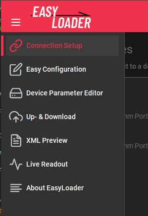
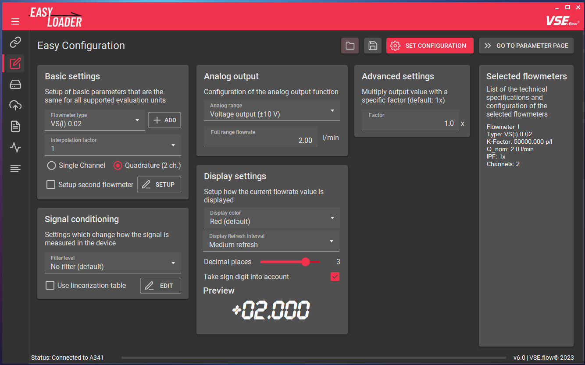
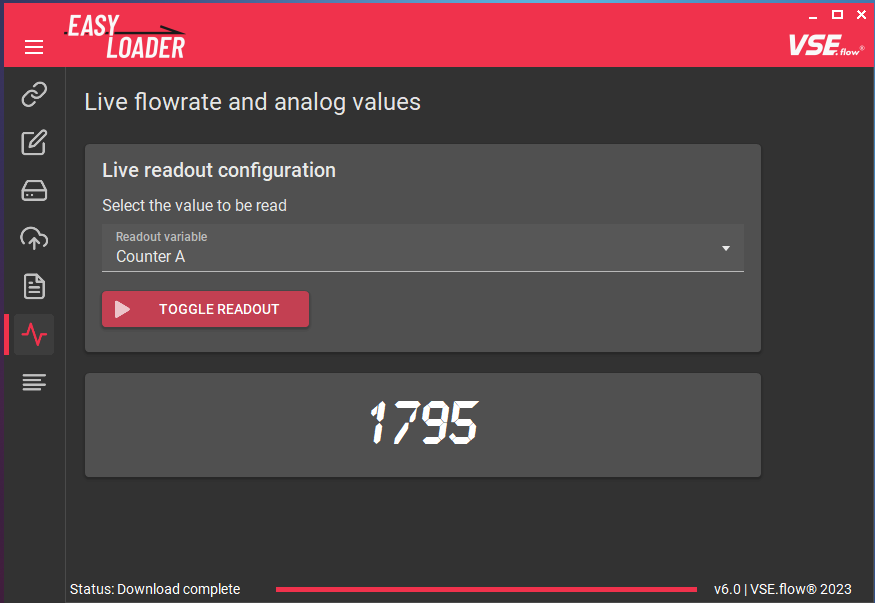
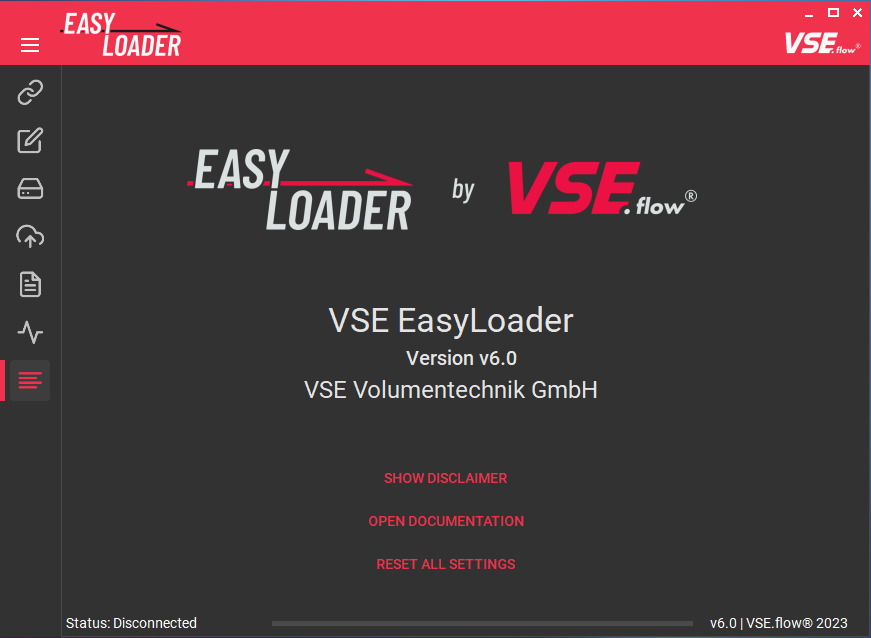

Basic configuration#
Program Overview#
This chapter shows an overview of all available features ordered by the pages in the tab drawer. Every feature will be described to explain its specific function. The program consists of multiple tab pages that can be switched using the tab icons on the left menu. By clicking on the "hamburger menu button" the icon labels are expanded.

Connection Setup#
The connection shows all available COM-ports on the system. To connect to a device, select the corresponding list item. The current connection status can be observed in the bottom toolstrip. Also connection diagrams and user manuals can be accessed using the corresponding buttons.

Easy Configuration#
In this tab, the main device configuration is being made. An example configuration will be described in the following chapter. By filling in the input fields, EasyLoader can calculate the neccessary device registers for the desired device functionality. Each configuration option will later be explained in-depth in the "Features" section of this documentation.

Device Parameter Editor#
The Device Parameter Editor is used to transfer the calculated register values or edit registers manually. The changes will be made offline and can then be transmitted to the device using the UPLOAD button in one go. You may also choose to use the Send on edit checkbox to immediately send register changes after editing a field. The Permanent storage checkbox applies an "EEPROM STORE" command immediately after sending all values to ensure data persistance after a power cycle. The full feature description can be found here.

Up- & Download#
The Up- & Download tab allows you to upload a previously saved or transmitted parameter file (*.xml type) and create such a file that contains all registers of a connected device. By choosing a file, you can also preview the file contents before uploading. The functionality is further explained here.

XML Preview#
To view the file contents of a parameter file, the XML Preview tab can be used. On the right panel, additional information is shown that has been saved during the download process like the name of the file creator and a custom comment.

Live Readout#
To check the parametrization and watch the current measurement value, the Live Readout tab was added. This is especially helpful, if you are configuring a device without display, like the FU210. Different display options are selectable, ranging from the current display values over raw frequency values to the analog output voltage.

About EasyLoader#
On the about page, the current version of the EasyLoader is displayed. You also get access to the previously accepted disclaimer, this documentation and an option to reset all user settings and cache data of this software (contains custom flowmeter definitions, cached manuals, cached documentation, information about whether you accepted the disclaimer).

Configuration Workflow#
The process of configuring a device with the EasyLoader is very simple. The workflow is shown in the following diagram.

Connecting a device#
To communicate with the measuring instrument a connection over the serial port must be established. Depending on the device and whether it is mounted in a table housing, you need to connect them to the pc using different methods.
Refer to the next chapter for more information about the connection process. If you dont know, how to connect the device, you can use the integrated connection diagrams.
After starting the EasyLoader the connection tab is shown. Select the COM port to which the device is connected and the connection process should be initiated. The device preview will change according to the detected device type.
Click on the Configure Device button or select the next tab in the menu bar to continue.
Example configuration#
In the Easy Configuration tab the connected device can be configured using only a few selections. The following example configuration will only go over the selections briefly. For a more in-depth description, move to the next chapter. Depending on the connected device the available input fields will vary:
- Basic settings
- Signal conditioning
- Analog output
- Advanced settings
- Display settings (only on A341 and A350)
For our example configuration we have the following devices on hand:
- A350-28 in a table housing
-
Flowmeter VSI 1/32 GPO12V-42R11
IPF = 32
2-channel preamplifier
Without calibration protocol
The fluid process is highly dynamic and needs a fast measurement reaction time with no filtering but a stable display value. The display unit is \(\frac{\textrm{l}}{\textrm{min}}\) and should display with 4 decimal places. The used flow range is limited to \(60 \frac{\textrm{l}}{\textrm{min}}\), the analog output's fullscale value should therefore be set to this value. The 4-20 mA output option should be used.
- No filter, medium display update
- 4 decimal places
- Unit: \(\frac{\textrm{l}}{\textrm{min}}\)
- Analog output: 4-20 mA current output
- \(Q_{fullrange} = 60 \frac{\textrm{l}}{\textrm{min}}\)
Using this data the input fields can now be completely filled:

After completion of the configuration, the corresponding device register values have to be calculated and uploaded into the device. In order to do this, click on the UPLOAD CONFIG button.
Using this technique, by default, all the parameters are saved in the device's EEPROM and loaded on every power-on.
Test#
The configuration is now active, you can try it out by connecting a flowmeter and TestBox TB2 to the device and input a known frequency. If the display/analog port outputs the expected flowrate, the configuration was successful.
Disconnect#
You may now disconnect the device. The software automatically recognizes a disconnect after a few seconds.